Kinokawa, Wakayama: things to do, food and stays
Kinokawa · Wakayama
Kinokawa
Highlighted on the Wakayama map.
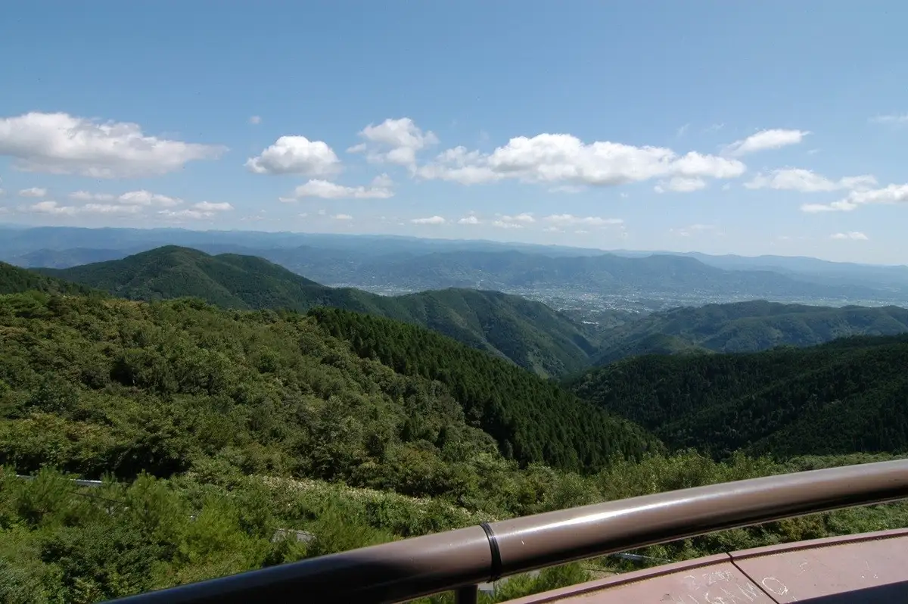
Stay
ホテルルートイン紀の川
Hotel Route Inn Ki No Kawa
Hotel in Nakaisaka, Kinokawa with breakfast available and parking.
気さくな女将の宿 丸浅旅館
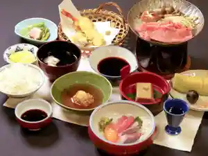
Ki Sakuna Josho No Yado Maru Sen Ryokan
Ryokan inn in Kokawa, Kinokawa with local seafood dinners.
Dining
うらしま
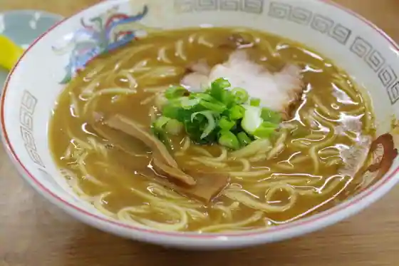
Urashima
麺屋 夢風
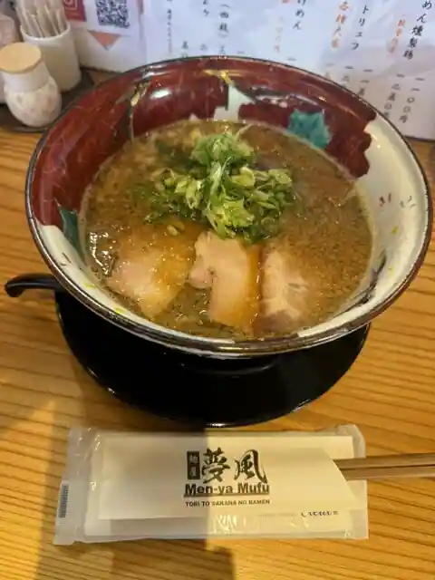
Men Ya Yume Kaze
しま彰
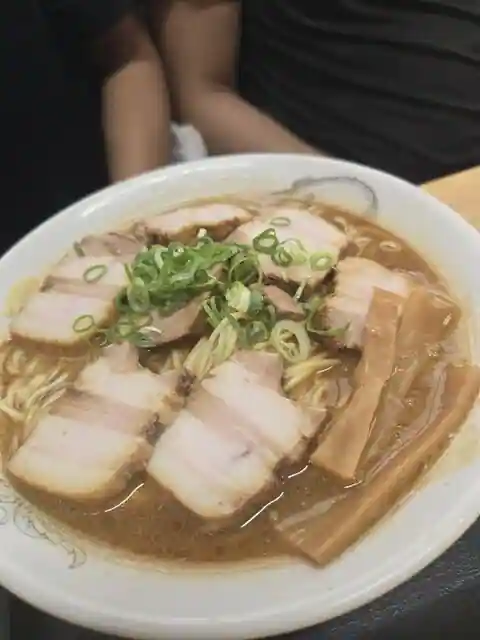
Shima Akira
藤桃庵
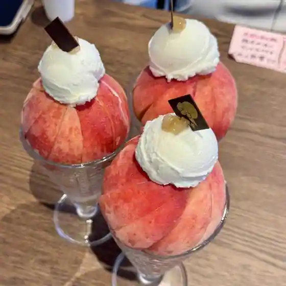
Fuji Momo Iori
メゾンフルリール
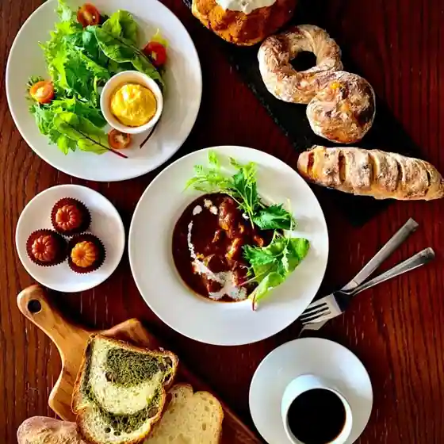
Mezonfururiru
たまカフェ
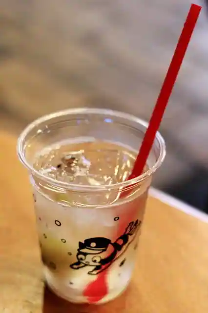
Tama Cafe
からびな
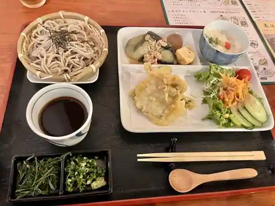
Karabina
めっけもん広場
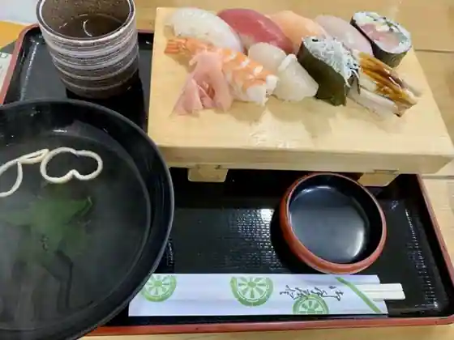
Mekkemon Hiroba
お食事処ふみ
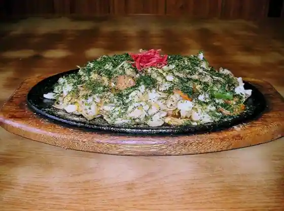
O Shokuji Tokoro Fumi
丸己
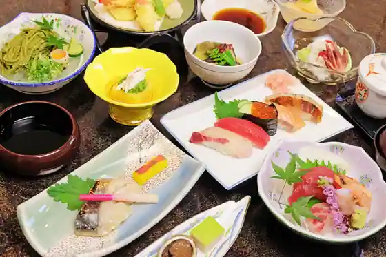
Maru Onore
中華そば大福軒
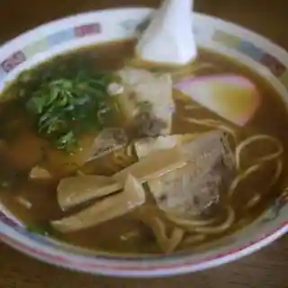
Chuka Soba Daifuku Ken
ムリーノ
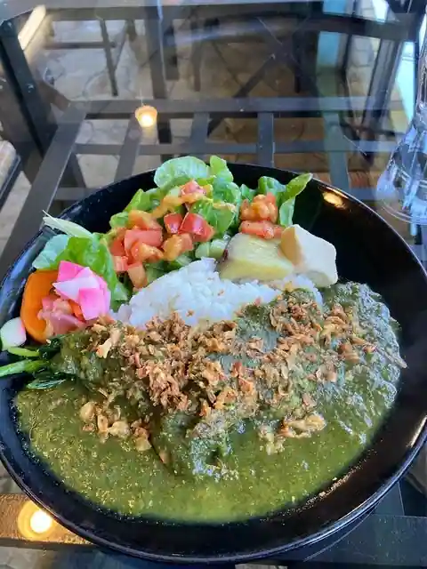
Murino
裕福 名手店
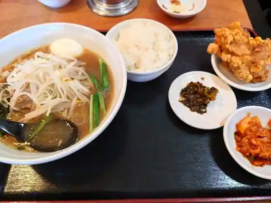
Yufuku Meishu
8っ8
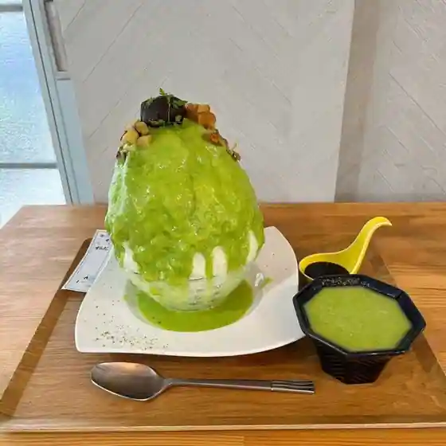
8 Tsu 8
サンスイ
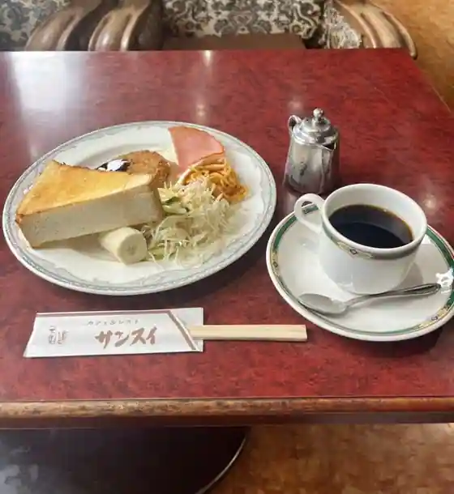
Sansui
観音山フルーツパーラー
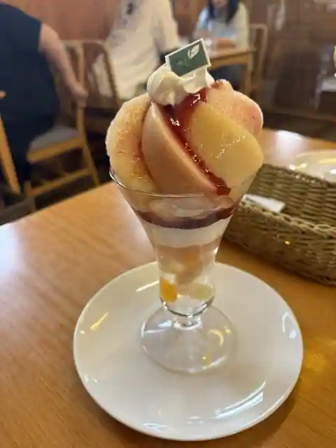
Kannon Yama Furutsupara
二代目よなきや
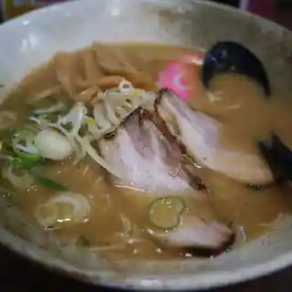
Nidaime Yonakiya
パン工房 セラヴィ
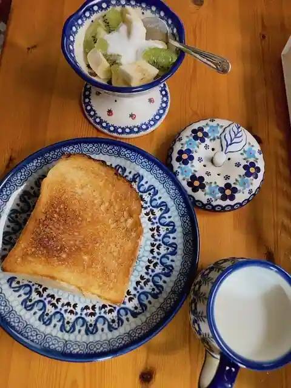
Bakery Kobo Seravi
鶏SOBA SUZURAN
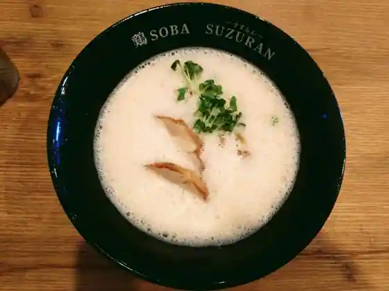
Niwatori SOBA SUZURAN
ka ra bi na
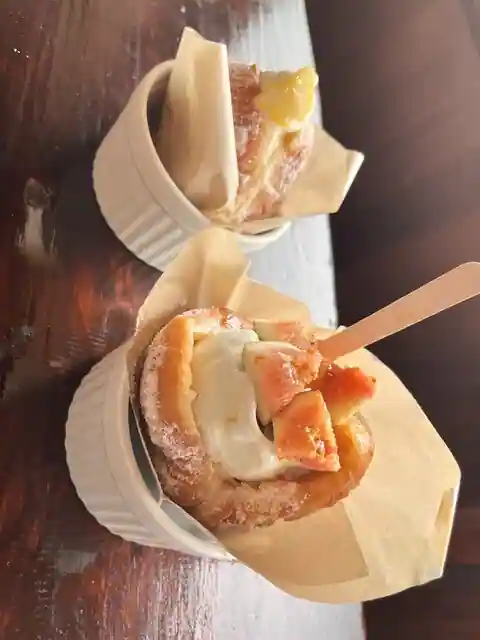
ka ra bi na
うなカフェ 555
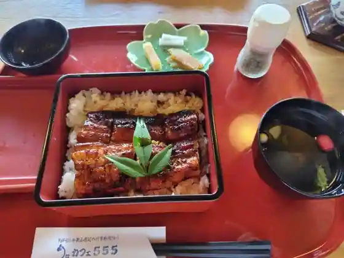
Una Cafe 555
熊野路
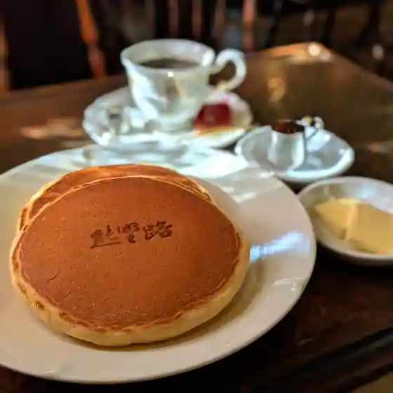
Kumano Michi
パン ド パニエ
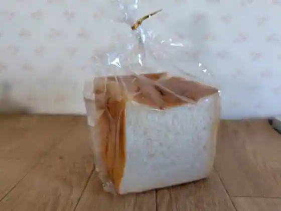
Bakery Do Panie
道の駅 青洲の里
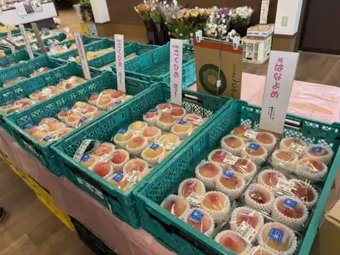
Michi No Eki Seishu No Sato
Sights
Taira Ike Green Park
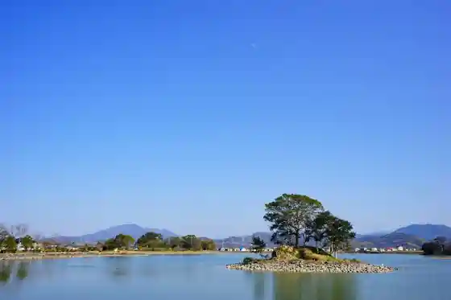
Roadside Station Seishu Village
Kokawa Tera
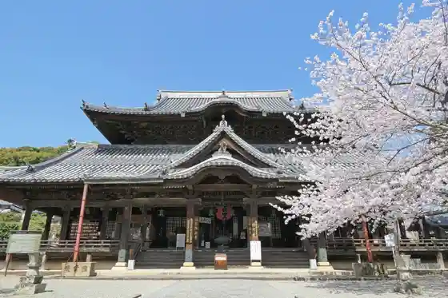
Katsuragi Yama Lookout
Hai Land Park Kokawa
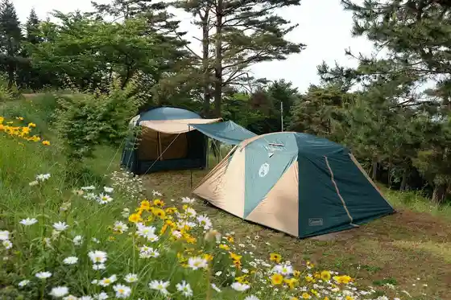
Saisho Ka Mine Tembo Tokoro
no Asobi no Oka
Naka Supotsurekurieshon Center
Ryumon Yama
Nagata Kannon
Kyumei Te Yado Honjin
Kinokawa Folk History Museum
Fukuro Yubinkyoku
Meishu Hachiman Shrine
Mifune Shrine
Kinokawa Tami Koen Puru
Kokawa Ubusuna Shrine